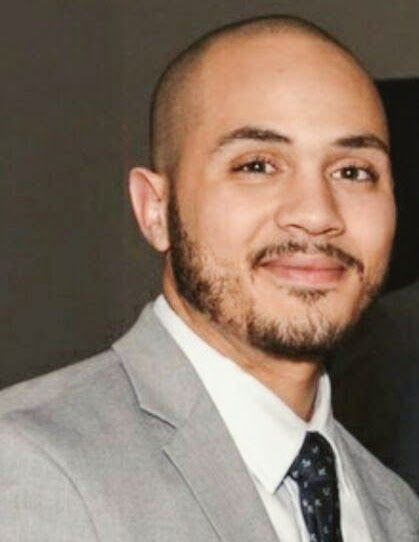

About Me
 Ari Vidal was born in New York City, and spent his child hood and teen age years in the New York City. He attended Elementary school and Middle school in Williamsburg, a neighborhood in Brooklyn. He graduated top of his class from Washington Irving high school, in Manhattan. He enjoys bike riding, especially on new bike trails. Traveling is one of his favorite hobbies. Trying new foods during his travels is a great add-in bonus, as he is a foodie.
Ari is a Financial Systems Analyst at Voya Financial. He currently is responsible for the PeopleSoft database and reporting repository, along with creating efficiencies in data pulling and manipulation. He received his Economics and Mathematics degree from Syracuse University in May 2011. During his time in Syracuse University he was the president of his fraternity along with being an active member of many student organizations. As president and active member, he was responsible for a handful of workshops and events on campus that won him and his organizations several accolades.
NAri has always had a passion for problem solving, math has been his strongest subject since elementary school. He stumbled across coding and web-design in high school but did not have much of an interest for it, as he had more of an interest for his calculus courses. He was re-introduced to technology and coding during the first position he held in the finance field. He started using VBA to ease his manual tasks while in this role. This ignited a spark in the subject and he began researching more and more into the subject and was eventually hooked.
Ari is currently enrolled in Georgia Techs Coding Bootcamp, where he anticipates learning new skillsets. He is currently mastering techniques in HTML5, CSS, JavaScript, jQuery, C#, ASP. Net, Bootstrap, and many more programing languages. He is hoping to apply his new skills, to his current position to streamline the operations of the company. Ari is currently building his developer portfolio, so feel free to click on the GitHub logo to check out his other projects. Thank you for visiting.